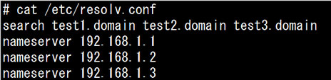
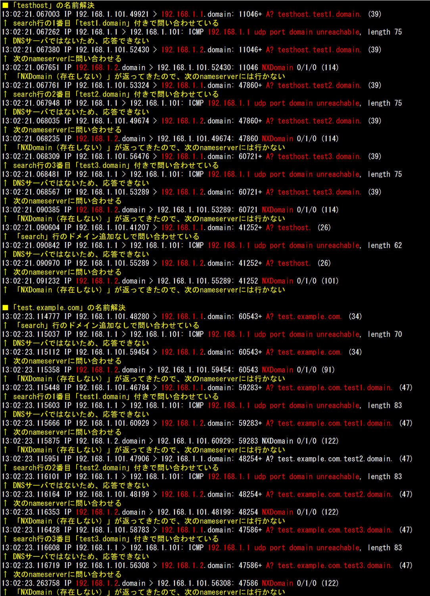
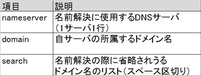
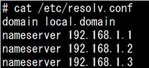
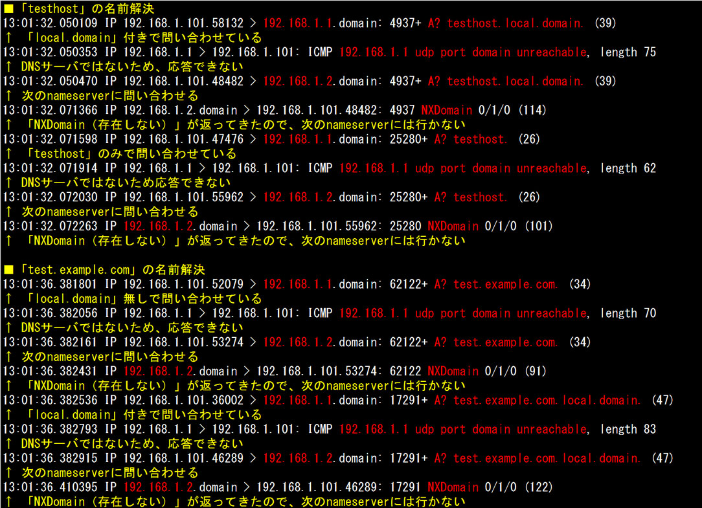

- 問題ID : 15755 クライアント側のDNS設定
- 履歴

正解
192.168.1.1から応答が無ければ、192.168.1.2に問い合わせる
ホスト名にtest1.domain、test2.domain、test3.domainの順にドメインを追加して名前解決を試みる
解説
名前解決に使用するDNSサーバや、DNSの名前解決問い合わせに関するオプションは「/etc/resolv.conf」で設定します。
「nameserver」の後にDNSサーバのIPアドレスを、「search」の後にドメイン名検索リストを指定します。
設問の設定では、以下のように名前解決しようとします。
■問い合わせ順序
・DNSサーバ 192.168.1.1に最初に問い合わせる
・192.168.1.1から応答がなければ、192.168.1.2に問い合わせる
・192.168.1.2から応答がなければ、192.168.1.3に問い合わせる
■名前解決の対象がホスト名のみ（＝ドットを含まない）の場合
・リストの1番目（test1.domain）をホスト名につけて名前解決
・リストの1番目のドメインを追加して名前解決に失敗した場合、リストの2番目（test2.domain）を追加して名前解決
・リストの2番目のドメインを追加して名前解決に失敗した場合、リストの3番目（test3.domain）を追加して名前解決
・search行のドメイン名リストすべてで失敗した場合、ホスト名のみで名前解決
・ホスト名のみでも失敗した場合、名前解決に失敗とする
■名前解決の対象がドメイン名付き（と思われる＝ドットを含む）の場合
・そのままで名前解決
・失敗した場合、リストの1番目（test1.domain）を追加して名前解決
・リストの1番目のドメインを追加して名前解決に失敗した場合、リストの2番目（test2.domain）を追加して名前解決
・リストの2番目のドメインを追加して名前解決に失敗した場合、リストの3番目（test3.domain）を追加して名前解決
・search行のメイン名リストすべてで失敗した場合、名前解決に失敗とする
したがって正解は
・192.168.1.1から応答が無ければ、192.168.1.2に問い合わせる
・ホスト名にtest1.domain、test2.domain、test3.domainの順にドメインを追加して名前解決を試みる
です。
実際の名前解決用パケットは次のように交換されます。

その他の選択肢は以下のとおりです。
・192.168.1.1に問い合わせて解決できなければ、192.168.1.2に問い合わせる
192.168.1.1から応答が無ければ、192.168.1.2に問い合わせます。
・192.168.1.1、192.168.1.2、192.168.1.3はランダムに負荷分散される
負荷分散されません。
・test1.domainは192.168.1.1に、test3.domainは192.168.1.3に対応したドメインである
「search」に指定するドメインは各DNSサーバに対応しているわけではありません。
参考
名前解決に使用するDNSサーバや、DNSの名前解決問い合わせに関するオプションは「/etc/resolv.conf」で設定します。
「/etc/resolv.conf」の主な設定項目は以下のとおりです。

「/etc/resolv.conf」の設定には、以下の制約があります。
・nameserverは標準では3つまでしか設定できません。上限を変更する場合はライブラリの再コンパイルが必要になります。
・domainは自身の所属するドメイン名を記述します。ホスト名のみの問い合わせの場合は同じドメインに所属するホストとみなされ、自動的にドメイン名が追加されます
・searchは省略されうるドメイン名を列挙します。最大6つまでしか設定できず、上限を変更する場合はライブラリの再コンパイルが必要になります。
・domainとsearchはいずれか一つしか設定できず、最後に記述されたものが有効になります。
domain、searchの設定の違いについて、
・DNSサーバではないサーバ（192.168.1.1）
・名前解決の問い合わせに「NXDomain（存在しないドメイン）」を返すDNSサーバ（192.168.1.2）
・名前解決の問い合わせ元（192.168.1.101）でのパケットキャプチャ
を使って確認してみます。
まず、domain設定です。

この設定では、以下のように名前解決しようとします。
■問い合わせ順序
・DNSサーバ 192.168.1.1に最初に問い合わせる
・192.168.1.1から応答がなければ、192.168.1.2に問い合わせる
・192.168.1.2から応答がなければ、192.168.1.3に問い合わせる
■名前解決の対象がホスト名のみ（＝ドットを含まない）の場合
・自分の所属するドメイン名（local.domain）をホスト名につけて名前解決
・失敗した場合、ホスト名のみで名前解決
・ホスト名のみでも失敗した場合、名前解決に失敗とする
■名前解決の対象がドメイン名付き（と思われる＝ドットを含む）の場合
・そのままで名前解決
・失敗した場合、自分の所属するドメイン名（local.domain）を追加して名前解決
・ドメイン名付きでも失敗した場合、名前解決に失敗とする
となります。
実際の名前解決用パケットは次のように交換されます。

以下のようにsearch行を設定すると問い合わせの仕方が変わります。
■問い合わせ順序
・DNSサーバ 192.168.1.1に最初に問い合わせる
・192.168.1.1から応答がなければ、192.168.1.2に問い合わせる
・192.168.1.2から応答がなければ、192.168.1.3に問い合わせる
■名前解決の対象がホスト名のみ（＝ドットを含まない）の場合
・リストの1番目（test1.domain）をホスト名につけて名前解決
・リストの1番目のドメインを追加して名前解決に失敗した場合、リストの2番目（test2.domain）を追加して名前解決
・リストの2番目のドメインを追加して名前解決に失敗した場合、リストの3番目（test3.domain）を追加して名前解決
・search行のドメイン名リストすべてで失敗した場合、ホスト名のみで名前解決
・ホスト名のみでも失敗した場合、名前解決に失敗とする
■名前解決の対象がドメイン名付き（と思われる＝ドットを含む）の場合
・そのままで名前解決
・失敗した場合、リストの1番目（test1.domain）を追加して名前解決
・リストの1番目のドメインを追加して名前解決に失敗した場合、リストの2番目（test2.domain）を追加して名前解決
・リストの2番目のドメインを追加して名前解決に失敗した場合、リストの3番目（test3.domain）を追加して名前解決
・search行のメイン名リストすべてで失敗した場合、名前解決に失敗とする
実際の名前解決用パケットは次のように交換されます。
このように、search行を設定すると存在しない名前に対する問い合わせ回数が多くなりがちなので、実際の設定時には注意が必要です。